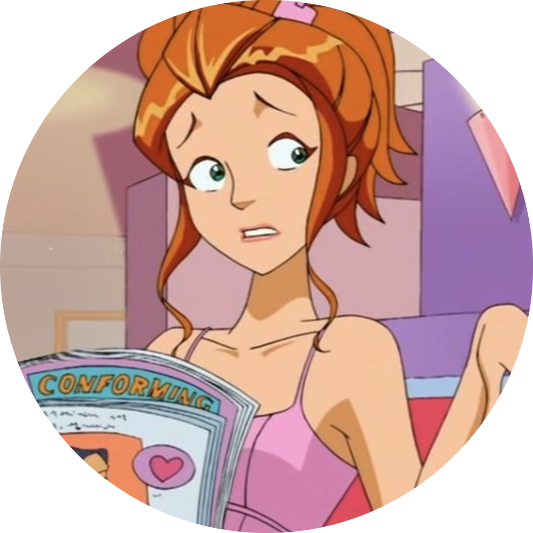

Totally Spies!
The animated television series Totally Spies! follows the adventures of three Beverly Hills teenage girls – Sam, Clover and Alex – who work as secret agents on missions to save the world while keeping their identity a secret from their peers. Supporting the girls is their employer Jerry from the World Organization of Human Protection (WOOHP). The show has spawned a variety of characters including students from their high school and university, fellow WOOHP agents, and a cast of villains, many of whom have returned in later episodes.
Clover. Clover Ewing has medium blonde hair, blue eyes and a red catsuit. Probably the show's most stereotypical character, Clover is a shopping addicted, boy crazy, teenage "fashionista". She pursues a Fashion Design-major when she and her friends start college. Nobody Touches the Hair is one prominent example of setting her off. And don't dare to say that Clover uses clothes bought in a liquidation. It never ends well. She doesn't like being turned down by a guy as well. She's usually smarter than she lets on. Clover is actually fairly intelligent and very resourceful but she seems to have a short attention span to anything not related to fashion, boys, celebrities and opportunities to become famous.
Sam. Samantha Simpson (more commonly called "Sam") has long red hair, emerald green eyes and a green catsuit. She's the most intelligent and practical girl in the group. She pursues a Journalism major at University. The most sarcastic of the group. She sometimes gets annoyed by Alex and Clover's comments and actions and will reply with a sarcastic remark or joke. She tries to be the most responsible and mature member of the team, but like her friends she can be boy crazy and can't resist hot fashion trends, she's just more dignified about it. Like Clover, she can also be a little petty and jealous if she has a rival for the object of her desire.
Alex. Alexandra Vasquez (more commonly called "Alex") has short black hair, tan skin, light brown eyes and her spy catsuit is yellow. Alex is the most naive and innocent of the group, and she's interested in sports and athletics. She pursues a Veterinarian major in University. Alex is the youngest and most childlike and is often seen as the little sister of the group, as Sam and Clover are the two big sisters who dominate over her. She actually wanted to grow up and either be a veterinarian or study animal physiology. One episode even has her bringing home a stray puppy she found and there is also her love for her pet pig Oinky.
Other characters
Watch on YouTube!